Śląskie
Najważniejsze miasta
Katowice
Katowice – miasto na prawach powiatu w południowej Polsce, położone we wschodniej części Górnego Śląska, na Wyżynie Śląskiej. 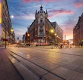Spodek
Ikoniczna hala widowiskowo-sportowa w kształcie latającego spodka, symbol Katowic. Odbywają się tu największe koncerty, wydarzenia sportowe i targi.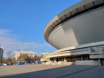
Nikiszowiec
Zabytkowa dzielnica górnicza z ceglastą zabudową i unikalnym klimatem. Spacerując wąskimi uliczkami, można poczuć atmosferę dawnego Śląska i spróbować tradycyjnych potraw w lokalnych restauracjach.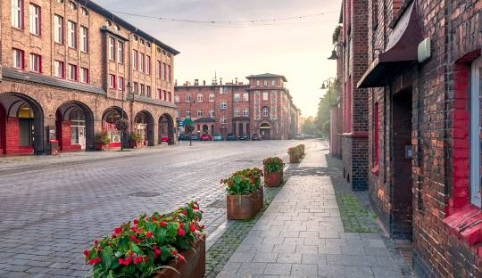
Muzeum Śląskie
Nowoczesne muzeum zlokalizowane na terenie dawnej kopalni, oferujące interaktywne wystawy o historii i kulturze regionu. Taras widokowy na wieży wyciągowej pozwala podziwiać panoramę miasta.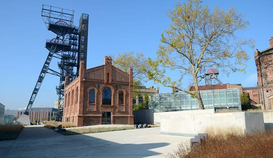
Częstochowa
Częstochowa – miasto na prawach powiatu w południowej Polsce, w województwie śląskim, siedziba powiatu częstochowskiego. 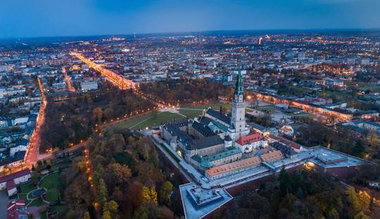Jasna Góra
Najważniejsze sanktuarium maryjne w Polsce, przyciągające pielgrzymów z całego świata. W klasztorze przechowywany jest cudowny obraz Matki Boskiej Częstochowskiej.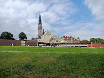
Muzeum Produkcji Zapałek
Unikalne miejsce, gdzie można zobaczyć, jak powstają zapałki oraz poznać historię fabryki działającej od ponad 100 lat. W muzeum znajdują się także stare maszyny produkcyjne.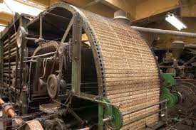
Aleja Najświętszej Maryi Panny
Główna arteria miasta prowadząca do Jasnej Góry, pełna kawiarni, sklepów i zabytkowych budynków. To idealne miejsce na spacer i podziwianie architektury Częstochowy.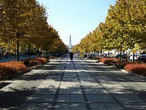
Zabrze
Zabrze – miasto w Polsce na prawach powiatu położone w województwie śląskim, na Wyżynie Śląskiej, nad rzekami Kłodnicą i Bytomką. 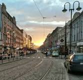Kopalnia Guido
Zabytkowa kopalnia węgla kamiennego, gdzie można zjechać 320 metrów pod ziemię. Zwiedzanie obejmuje przejażdżkę górniczą kolejką i pokaz pracy maszyn wydobywczych.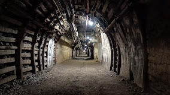
Sztolnia Królowa Luiza
Podziemny kompleks wypełniony atrakcjami, w tym przejażdżką łodzią po dawnych wyrobiskach. Można tu zobaczyć, jak wyglądała praca górników przed wiekami.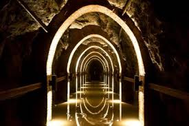
Dom Muzyki i Tańca
Jedna z najważniejszych sal koncertowych na Śląsku, goszcząca największe wydarzenia kulturalne. Odbywają się tu koncerty symfoniczne, operowe oraz występy gwiazd polskiej i światowej sceny muzycznej.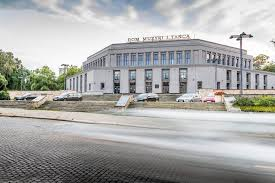